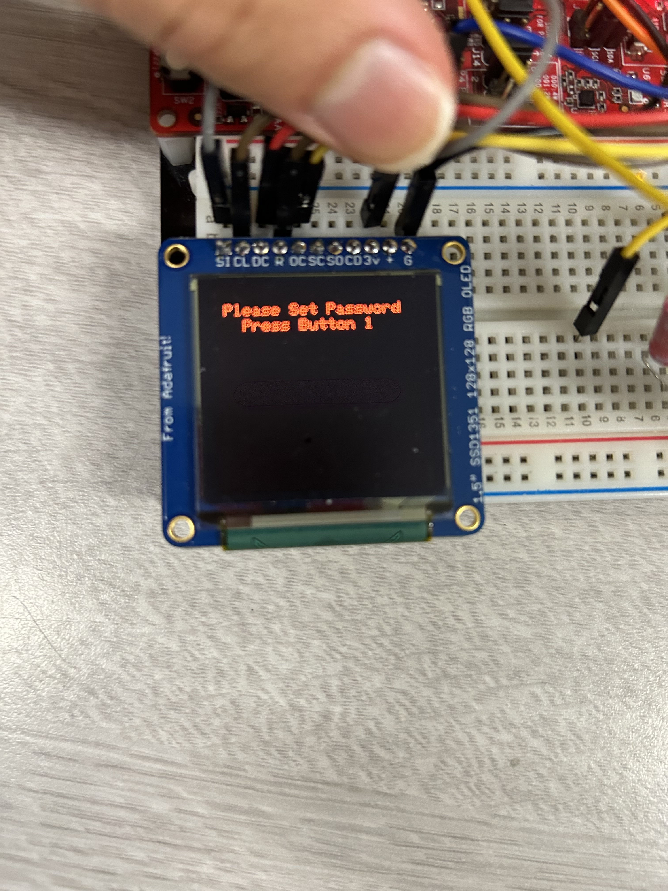
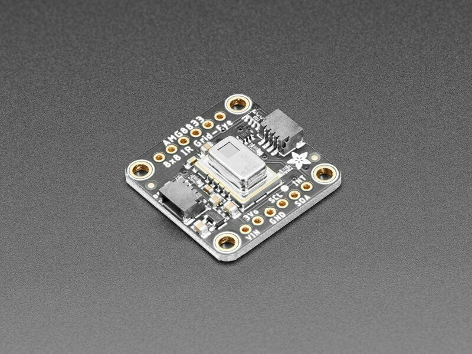
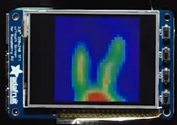

FUNCTIONALITY
Presence detection using an 8x8 IR array camera
Email notifications using AWS IoT Core and AWS SNS when motion was detected
Password-protected system disarming
128x128 OLED display shows system status
Intrusion Alarm
Battery Powered Operation
HOW DOES IT WORK?
The wall-mounted device is intended to be pointed towards a point of entry, like in the foyer of a home. The device includes a battery, and wifi connectivity for a clean-looking installation.
We are using an off the shelf breakout board from Adafruit that features an infrared radiation detector array. This sensor was built by Panasonic for presence detection. We gather the data from the 64 pixels ten times per second when the system is armed. IR radiation came come from a multitude of places. Appliances, windows, and HVAC all emit EMI in the spectrum that a human does. One thing these all have in common however, is a very low rate of change. Meanwhile, a human walking through a door would exude quick change in the camera's data. So, we employ a change in temperature over time algorithm to sense presence. In the future, we'd like to implement a simple AI model to calculate intruder detection. Our current implementation also picks up pets and movement outside a window as presence. We could solve this by adding cooperation with door sensors, and in a much more expensive case, machine vision.
Now however, we have designed the software so that when the device is armed, and it detects an intruder, a timer starts counting down until it recieves the de-arm password from the remote.
Video Demo
Design
I. Functional Specification
On boot, we initialize our custom home screen and display it on the OLED.
The home screen gives users options to arm the system (+) or set a
password (1). If the user tries to arm the system without first setting a
password, the system will tell the user to set a password (displayed on OLED).
When password setting is selected, if there exists a previously existing
password, the system will ask for the user to enter the previous password as
a security verification measure. If the correct password is entered in this
case, the system will then ask the user to enter the new password they want to
set. Once entered, the system will return the homescreen. To arm the system,
the user presses +, and the system will ask for the password. While the password
is not correct, the system will stay in this state. When the correct password is
entered, the system is armed, and begins to poll the IR Camera for human movement,
filtering out movement (or pixel changes) that are not within the range of human
body temperature. Once a detection is made, the system starts a 10 second countdown,
and alerts the user to enter the password to disarm the system. If the correct
password is entered, the system will return to the homescreen. If the countdown reaches 0
without the correct password being entered, the alarm will be triggered, the LED
will turn on, and a notification will be sent through AWS.
The alarm can be disarmed by entering the correct password.
II. System Architecture
In our implementation, our main is responsible for GPIO, SPI, OLED,
AMG8833, AWS, and IR remote interrupt intializations. A while loop is then
entered, where IR remote transmissions are constantly being checked for.
The system abstracts the complexity of the security logic through a series
of functions. Setting the password is done through pressing button 1.
Once the password is set, the user can arm the system by pressing "+".
When the system is armed, it will begin polling the IR Camera's sensor
data for human movement (using heat thresholds to determine if movement
is human), and if movement is detected, the motion_detected flag is set
to 1. Once motion is detected, a countdown timer is started, dispalying the
time remaining on the OLED, and the system continously looks for the correct
password to be entered. If the correct password is entered, the system
is disarmed and the appropriate flags are reset, and the system returns to
the home screen. If the correct password is not entered in time, an alarm
is triggered and a notification is sent through AWS to email notifying
that an intruder was detected. The system can be disarmed from this state
by entering in the correct password.
 System Flowchart
System Flowchart
Implementation
Security System Logic
Our security system logic was done locally on the CC3200 Texas Instruments
board. We used Code Composer studio, or CCS, in order to write the security
logic of the system in the C language. Setting the password would store the
password in a global variable, and arming the system would also be set in
another global variable. The initialization of the IR camera and the corresponding
data reads/writes were done through I2C. The OLED received and sent data through
SPI. Edge-cases were handled by the defined states, which each had their own
unique flags as indicators.
Hardware Implementation
For our hardware implementation, we used an adafruit AMG 8833 IR Camera
and an AT&T remote control as inputs to control the software logic of the
security system. The user entered necessary text and commands through the AT&T remote,
and movement detection was done through the IR Camera. Display for the security
system user interface was done using the Adafruit SSD1351 OLED. The CC3200 sent
formatted json messages through AWS to our emails when detections occurred and
when new passwords were set.
 Circuit Diagram
Circuit Diagram
Challenges
Edge Case Logic
We initially did not consider edge cases. For example, for the case when the
user tries to set a password, but doesn't set a password and instead presses "+"
to arm the system, then goes back to setting a password by pressing "1", the flags
that determine the state were not reset properly. As a results, incorrect states would
be reached, in this such case the system would ask for a new password to set
instead of asking for the previous password, a security risk. To fix this, we reset flags of the
states beside the current state when first entering the current state. This ensured
that flags would be properly reset, and by extension, the states would be entered
in the correct order. Additionally, on first bootup, there was no initial password set,
so the user could arm the system immediately without a password, which would then
disarm the system immediately when motion was detected. A password must be set, so we
added a check to ensure that a password was set before arming the system.

Ensure a password is set before arming
I2C IR Camera Hardware Writes/Reads
On the hardware side, we experienced issues with the AMG8833 IR Camera. When we
loaded code onto the CC3200 (entered the debug mode) multiple times while the board
was still connected, the address of the IR Camera would fail to show up. As a result, data
could not be read or written from and to the IR Camera. We realized that each time we wanted
to re-flash new code, we had to disconnect the CC3200 from the USB port, and plug it
back into the computer.

Adafruit AMG8833 IR Camera
Future Work
We would have liked to add a chassis to our project for a more polished security system
appearance. Additionally, we had a LED as an indicator for when the alarm was tripped,
but moving forward, a noise buzzer would be an impactful component to include into our system.
For appearance purposes, we would've also liked to display the IR Camera's live feed onto
a display screen, however this is not strictly necessary as detections can be made without it.

IR Camera Display Feed
Bill of Materials
| Part Name |
Function |
Cost |
Obtain From |
| TI CC3200 Launchpad MCU Board |
Main microcontroller to control connected devices and post data to AWS |
Included |
Lab |
| Vishay TSOP311xx/313xx/315xx IR Receiver |
Recieves 38KHz pulsed IR radiation from our IR remote |
Included |
Lab |
| AT&T S10-S3 General Remote |
Used for arming and disarming, as well as password input |
Included |
Lab |
| Adafruit OLED SSD1351 Display |
Displays system information |
Included |
Lab |
| Wurth Elektronik 100uF 16V Capacitor |
Power filtering for IR receiver module |
Included |
Lab |
| Adafruit breakout board for Panasonic AMG8833 IR Array Sensor |
Senses surface temperature from IR radiation in its FOV |
$45 |
Amazon |
| LED |
Turns on when intruder is detected |
$0.10 |
Amazon |